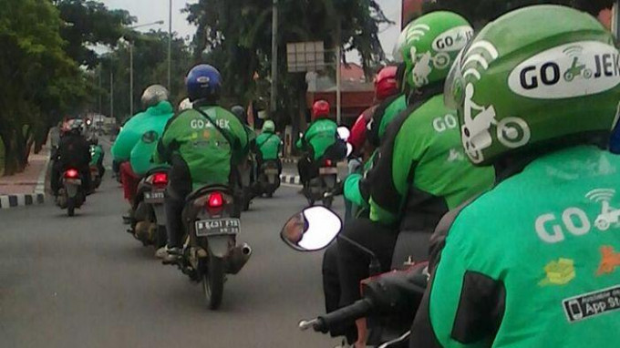
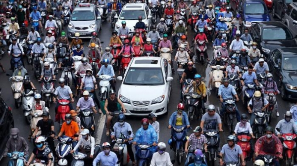
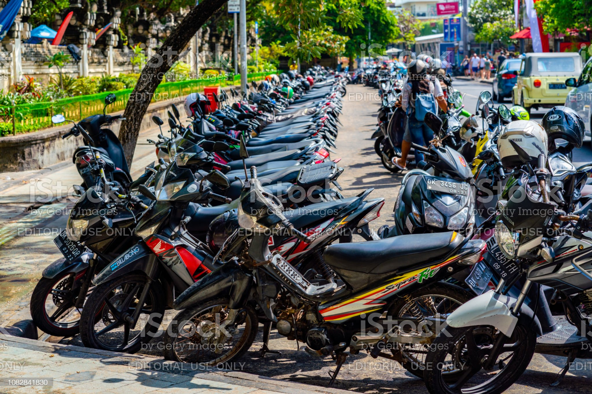

오토바이



오토바이
전체 가정의 오토바이 보급률이 83.27%로 인도네시아인들의 가장 대중적인 교통수단이다.
일반적으로 서민들에게 인기 있는 일본 제품의 신형이 1300만 루피아 정도고, 중고제품이 700만 루피아에서 900만 루피아 정도에서 거래된다.
관광객 또한 Grab Uber를 사용하여 이용 할 수 있으며 거리에 따라 택시보다 저렴한 가격으로 이용 할 수 있다. (핼멧이 없는 경우도 있다.)
Grab 사용법